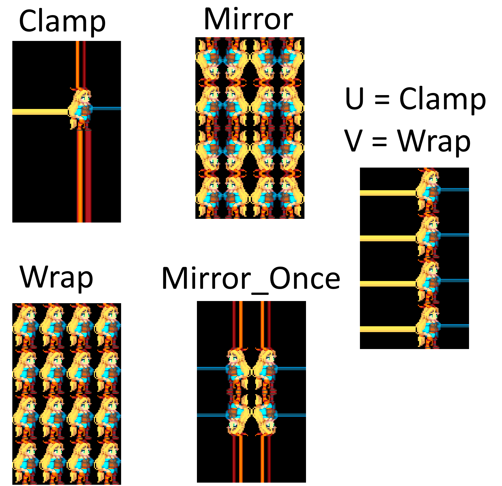
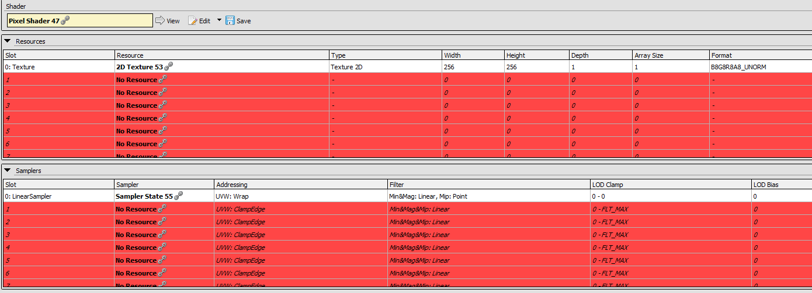
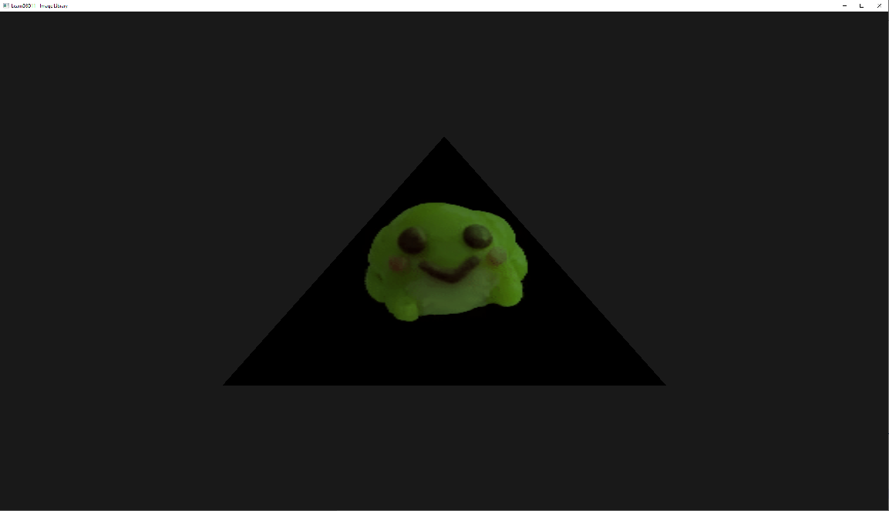

Texturing¶
Now that we have a triangle, the next step is getting a texture onto that triangle.
However in order to get there we need to take a few steps.
Textures are usually created from images, however these images almost always come in some compressed form. We cannot just simply read in a PNG file and create a texture from it, the GPU does not understand the PNG format (or most other formats) with the exception of a few special formats.
Thus in order to create a texture from an image we'll have to decode it, this can be a very difficult process so we will use a library for it, in our case two even!
We'll quickly explain both FreeImage and DirectXTex here but you can use whatever you are comfortable with in the end, we have chosen these two libraries because they both do specific things.
FreeImagewill allow us to read nearly every common format (PNG,JPG,TGA,BMP, etc) and give us a few options to preprocess them.DirectXTexwill allow us to read in the DDS format, which will be explained in a bit.
Let's take a look at the code, we'll mainly focus on two functions here, CreateTextureView and CreateTextureViewFromDDS.
Firstly, CreateTextureView:
In this function we'll use FreeImage to read in regular images and create a texture from it. After reading in the full file CreateFileW() -> ReadFile() we tell FreeImage to open a handle to the raw image data (which is still encoded) with: FreeImage_OpenMemory(fileDataRaw.data(), fileDataRaw.size()).
We'll query the image format with FreeImage_GetFileTypeFromMemory(memHandle), which will attempt to figure out the file type from the image's "magic" bytes (most files start with a few bytes that will tell applications what kind of file it is, for example PNGs start with: 89 50 4E 47 which in ascii is: ‰PNG).
If FreeImage wasn't able to figure out the format, we'll return a nullptr because we won't be able to decode the image (if it was one in the first place), otherwise we'll start the decoding process with FreeImage_LoadFromMemory(imageFormat, memHandle) which will decode the image to a raw format consisting out of (usually) RGB(A) colors.
After that is done we can get rid of the raw memory as we no longer need it (we have the decoded data now).
Something that isn't entirely required to do, but we will do for consistency is call FreeImage_FlipVertical(image), D3D11's UV.y space are usually going up, where most other software expects it to go down, so naively loading images can result in textures being displayed upside down.
DirectXTex will handle this for us, so for consistency we'll flip the image as well.
Now that we have the image in (almost) the format we need, we're getting to the texture creation. The sole exception being if the original texture was 24-bit (RGB), as there exist no 24-bit (R8G8B8) texture formats in D3D11 we'll need to convert it to a 32-bit (R8G8B8A8) texture before doing anything, this is easily done with FreeImage_ConvertTo32Bits(image).
Now we get to the D3D11 stuff.
In order to create a texture we need a few things, its width, height and format. This will tell D3D11 what data we're giving it and how it should interpret it.
This data will go in a D3D11_TEXTURE2D_DESC which "DESC(ribes)" our texture data.
Most images we see in our daily lives will be 24-bit or 32-bit, depending if they have alpha or not. As was noted before, D3D11 does not support 24-bit textures, but what do these values mean? The amount of "Bits per Pixel" is what we're talking about when we say an image is N-bit, this commonly translates to "how many channels" a texture has, in order to not overcomplicate things we'll assume all data we're working on is SDR (Standard Dynamic Range) and not HDR (High Dynamic Range) The key difference between those two is the range of a color, in SDR colors usually have 8 bits per channel, meaning our colors go from 0 to 255 (0xFF), HDR can take many shapes or forms and has no real consistent format to speak of but values can easily surpass the range of 0 to 1024 or more.
Knowing that we assume SDR formats we'll switch on the amount of BPP of common values, anything weird and we're out!
This is the first spot where we get into texture formats, our first case is "8 bits per pixel", not very common, but easy to handle, for us this means there only exists an "R" channel, no "GBA" to speak of. We'll tell D3D11 the same by specifying DXGI_FORMAT_R8_UNORM.
You'll see the enum ends on _UNORM, this is 'how' our texture sampler will return the data to us in the shader.
The following data types exist:
| Suffix | Explanation |
|---|---|
UNORM |
"Unsigned Normalized", data will be interpreted as a range of 0.0f to 1.0f. |
SNORM |
"Signed Normalized", data will be interpreted as a range of -1.0f to 1.0f. |
UINT |
"Unsigned Integer", data will be interpreted as a maximum range of 0 to 4294967295 (0xFFFFFFFF). |
SINT |
"Signed Integer", data will be interpreted as a maximum range of -2147483648 to 2147483647. |
FLOAT |
Each channel will be a full floating point value. |
TYPELESS |
This format is special and can be many things, its up to the shader how to handle this data. |
There exists another suffix behind these ones for some special cases: SRGB (DXGI_FORMAT_R8G8B8A8_UNORM_SRGB) which will tell the sampler that the data is in sRGB color space.
As we'll assume normal SDR textures with 8 bits per pixel, we end up with either R8, R8G8, or R8G8B8A8 depending on how many BPP the image has.
We'll also use UNORM as the math in shaders becomes a lot easier if everything is a neat 0.0f to 1.0f range.
To keep things simple we set ArraySize, MipLevels and SampleDesc.Count to 1, and these will be explained in later chapters.
After also filling in the Width, Height and Format we're left with two more members Usage and BindFlags.
Usage will tell D3D11 what we're going to do with the texture data, will we adjust it or is it set in stone from the start?
This is what we tell it with:
| Flag | Explanation |
|---|---|
D3D11_USAGE_DEFAULT |
"We can read and write to this on the GPU" (For textures we want to change on the GPU later, usually through shaders). |
D3D11_USAGE_IMMUTABLE |
"Set in stone, not adjustable at all once we create the texture". (For textures that 'never' change). |
D3D11_USAGE_DYNAMIC |
"The GPU can only read this, and the CPU can only write". (For textures that we infrequently change through the CPU). |
D3D11_USAGE_STAGING |
"This texture is copied to/from often (either on CPU or GPU)" (This 'only' supports copying, not arbitary writing). |
BindFlags will tell D3D11 how we're going to use the texture, there are multiple values that do not make sense (or are valid) for textures, so we'll only explain the valid ones:
| Flag | Explanation |
|---|---|
D3D11_BIND_SHADER_RESOURCE |
This a read-only resource for shaders (This is the one we use for regular textures!) |
D3D11_BIND_STREAM_OUTPUT |
This is for our swapchain output, very rarely used. |
D3D11_BIND_RENDER_TARGET |
This a write-only resource (render target) |
D3D11_BIND_DEPTH_STENCIL |
This is a special (write-only) DepthStencil resource (use for depth buffers) |
D3D11_BIND_UNORDERED_ACCESS |
This is a read-write resource for shaders. |
Because we don't have plans to change the texture after creation and we only use it as a read-only resource for shaders, we set Usage to D3D11_USAGE_IMMUTABLE and BindFlags to D3D11_BIND_SHADER_RESOURCE
However because it is IMMUTABLE we need to supply the data immediately upon creation, we'll do this with a D3D11_SUBRESOURCE_DATA parameter.
This is a simple structure that tells D3D11 where to find the data and how big it is.
For pSysMem we point it to the data that FreeImage is holding which we can get with: FreeImage_GetBits(image).
SysMemPitch will tell D3D11 how big a row of data is, as we have only told it how to interpret the data in D3D11_TEXTURE2D_DESC but not what it 'actually' is.
The size of a row of data from a 32-bit texture with a width of 512 is calculated as following:
We can get the amount of channels (we're assuming 8 bits each) by dividing the image's BPP (Bits Per Pixel) by 8 (so our resulting channel count is 4), we multiply this with the width, and so we end up with our example being:
(32/8) * 512 = 2048 bytes per row.
And that's it.. now we can finally create our texture resource by calling: device->CreateTexture2D(&textureDesc, &initialData, texture.GetAddressOf()).
Alas we're not there yet, we have created the resource but have not created our view which is what we need to bind to a shader stage.
We do this by creating a ShaderResourceView, thankfully all the hard work is already done and we can simply fill in the few bits in a D3D11_SHADER_RESOURCE_VIEW_DESC by copying most of it from our D3D11_TEXTURE2D_DESC, the only thing new here is us telling it that the view should interpret the data as a 2D texture by specifying D3D11_SRV_DIMENSION_TEXTURE2D.
We call device->CreateShaderResourceView(texture.Get(), &srvDesc, &srv)) and end up with our most important piece, an ID3D11ShaderResourceView, at this point we no longer care about the original resource data (WRL::ComPtr<ID3D11Texture2D> texture) and let it go out of scope, which will decrease the reference count for us. This works because the ShaderResourceView holds an internal reference to the Texture2D so the actual data is not deleted until we get rid of our ID3D11ShaderResourceView.
Before we do anything with it (other than storing it) we'll quickly go over CreateTextureViewFromDDS().
We have made DDS a special case because its not a "normal image", its a rather special and efficient image format because its compressed in a way that the GPU understands allowing us to save memory and bandwidth.
Because we have gone through the path of manually creating a texture so we know what happens under the hood a bit better, we can now allow ourselves to have all of this taken care of for us.
Getting DDS in a CPU/Human readable format is a big hassle, and luckily we don't even want to, it pretty much goes to the GPU as is and it already contains the format and everything inside of it.
All we need to do here is call DirectX::LoadFromDDSFile() and proceedingly DirectX::CreateTexture() in order to get our texture resource (WRL::ComPtr<ID3D11Resource>), at this point we could make our own ShaderResourceView if we want specific formats or also let DirectXTex take of it (which we will).
We choose the latter and call DirectX::CreateShaderResourceView and we end up with a ID3D11ShaderResourceView ready to use!
Now that we have our SRV ((S)hader(R)esource(V)iew) ready, we need to do a few more things, bind it to the shader stage, add it to the shader code and create and add a texture sampler. Thankfully these steps aren't overly complicated.
Binding it to a shader stage (in our case the pixel shader), is as simple as getting the ID3D11DeviceContext and call PSSetShaderResources on it.
(XX)SetShaderResources (where XX is "VS" (VertexShader), "PS" (PixelShader), etc) takes a few parameters, as it can set multiple textures at once:
| Parameter | Explanation |
|---|---|
StartSlot |
The texture slot to start from (generally starting at 0). |
NumViews |
The amount of textures we're setting. |
ppShaderResourceViews |
The array of SRVs. |
If we only need to set a single texture, this is as simple as calling: PSSetShaderResources(0, 1, srv.Get()).
If we call PSSetShaderResources(2, 2, srvs) it will start at slot 2 and thus set slot 2 and 3, with the SRV's supplied.
Creating a SamplerState (which is used for sampling textures) is pretty simple, all it needs is us telling how to filter the texture and how it wraps (or not) around the texture if we exceed the bounds.
Filling in a D3D11_SAMPLER_DESC only requires a few members to be set: "Filter", "AddressU", "AddressV", "AddressW".
Filter takes a D3D11_FILTER, which has a lot of options but all compose out of a few core concepts:
| Prefix | Explanation |
|---|---|
MIN_MAG |
The filter used across the texture's pixels regardless of angle/distance. |
MIP |
The filter used between the texture's mips. (we'll come back to this later) |
And the filter modes:
| Suffix | Explanation |
|---|---|
POINT |
"no filtering" pixels are shown as is (good for sprite/pixel art!). |
LINEAR |
pixels are smoothed between each other, cheap pick for 3D games. |
ANISOTROPIC |
mode for doing additional processing for textures at angles, looks like LINEAR but cleaner when the texture is seen at big angles (bit more expensive than LINEAR, but great pick for anything 3D). |
In our example we pick D3D11_FILTER_MIN_MAG_LINEAR_MIP_POINT, but feel free to experiment with these.
AddressU/V/W all take the same enum, where U is behaviour on the horizontal axis, V is vertical, and W is depth (for 3D textures). The following options exist and all work on behaviour when sampling outside the 0.0f to 1.0f range:
| Flag | Explanation |
|---|---|
D3D11_TEXTURE_ADDRESS_WRAP |
Wrap around (akin to modulo(1.0f)) (good for tiling textures!) |
D3D11_TEXTURE_ADDRESS_MIRROR |
Flips the texture every time you hit the border. |
D3D11_TEXTURE_ADDRESS_CLAMP |
Samples the pixel at the edge |
D3D11_TEXTURE_ADDRESS_BORDER |
Return the border value specified in the SamplerState |
D3D11_TEXTURE_ADDRESS_MIRROR_ONCE |
Mirrors the texture once, then clamps |
A few examples: 
We create our SamplerState with _device->CreateSamplerState(&linearSamplerStateDescriptor, &_linearSamplerState))) and binding it works the same as the SRVs but with (XX)SetSamplers instead.
For example: deviceContext->PSSetSamplers(0, 1, sampler.GetAddressOf()).
A visualisation of what these "slots" are can be found within Renderdoc:

As an example you can see in the image above that there is a texture bound at slot 0, and a sampler at slot 0.
Lastly we need to tell the pixel shader that we can now use a texture in there. We do this by adding:
sampler LinearSampler : register(s0);
Texture2D Texture : register(t0);
This is where we first encounter the register keyword, depending on what we give it, this needs to match the slot we set the resource in (as specified above).
Because we set both the texture and sampler to slot 0, these end up being t0 and s0 (t for texture, and s for sampler).
We also created a 2D texture so our type for the texture is Texture2D.
Finally, we can sample the texture by calling the function Sample on Texture, and for the first parameter we supply our sampler, and the second argument will be our location (in UV space)
float4 texel = Texture.Sample(LinearSampler, input.Uv);
We end up with a froge on the triangle! 